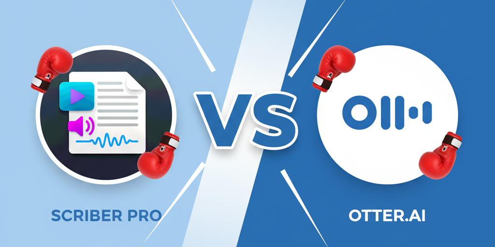

Scriber Pro vs Otter.ai:隐私与便利对比 (2025)
隐私优先的离线转录 vs. 基于云的便利性
最后更新：2025年9月 • 包括2025年8月诉讼分析
快速对比:Scriber Pro vs Otter.ai
| 功能 | Scriber Pro | Otter.ai | 优胜者 |
|---|---|---|---|
| 隐私 | 100% 离线处理 零云端上传 |
基于云端 所有音频上传到服务器 |
Scriber Pro |
| 速度 | 10-50 倍实时速度 15 分钟音频 ≈ 30 秒 |
约 1 倍实时速度 15 分钟音频 = 5-6 分钟 |
Scriber Pro |
| 价格 | $3.99 一次性 无限转录 |
$20/月 $240/年订阅 |
Scriber Pro |
| 准确度 | 96-98% 基于 Whisper Large v3 |
85-90% 因音频质量而异 |
Scriber Pro |
| 协作 | 仅本地 手动导出和共享文件 |
实时共享 云协作功能 |
Otter.ai |
结论:Scriber Pro 在隐私、速度、价格和准确度方面获胜。Otter.ai 仅在协作功能方面领先。
⚠️ 最新消息：Otter.ai 面临联邦集体诉讼
2025年8月： 在加州提起的联邦集体诉讼指控Otter.ai“欺骗性地、秘密地”在未经适当同意的情况下录制私人对话，并利用这些录音训练AI模型。该诉讼代表2500万用户，涵盖自2016年以来录制的超过10亿次会议。
来源：NPR，2025年8月15日 - “集体诉讼称Otter AI秘密录制私人工作对话”
执行摘要：隐私与便利的权衡
在Scriber Pro和Otter.ai之间的选择，代表了在转录软件中对隐私与便利性的根本抉择。最近的法律动态加剧了人们对云转录服务的担忧，使得离线替代方案对注重隐私的专业人士越来越有吸引力。
隐私优胜者
Scriber Pro
最适合： 需要快速、准确且无隐私风险的转录，处理机密信息的专业人士。
- 100%离线处理
- 数据无需上传至云端
- 一次性购买
- 采用分块技术，速度飞快
法律问题
Otter.ai
最适合： 优先考虑协作功能而非隐私，并愿意接受云风险的团队。
- 实时协作
- 会议集成
- AI摘要
- 云同步
隐私分析：核心差异
为何在2025年隐私如此重要
2025年8月针对Otter.ai的集体诉讼凸显了专业人士再也无法忽视的关键隐私问题。该诉讼指控Otter：
- 未经所有参与者明确同意录制对话
- 利用录音为“商业利益”训练AI模型
- 为“训练和产品改进”与第三方共享数据
- 在“去识别化”数据中未能充分保护说话者的匿名性
“该诉讼认为，Otter的‘去识别化’过程不充分，不能保证说话者的匿名性。”
来源：NPR集体诉讼报道，2025年8月
数据处理比较
| 数据实践 | Scriber Pro | Otter.ai |
|---|---|---|
| 音频存储位置 | 仅在您的Mac上 | Otter的云服务器 |
| 用于AI训练 | 从不用于训练 | 用于AI模型训练 根据Otter.ai隐私政策，2024年9月 |
| 第三方访问 | 不可能 - 数据永不离开设备 | 与云提供商、分析平台共享 Otter.ai隐私政策 |
| 数据保留 | 您控制 - 随时删除 | “为实现目的所需的时间” Otter.ai隐私政策 |
| 法律合规性 | 符合HIPAA、律师-客户保密特权 | 可能违反窃听法 加州集体诉讼，2025年 |
准确性与性能比较
96.8%
Scriber Pro
专业播客测试准确率
Mac转录指南测试，2025年
85-90%
Otter.ai
报道的准确率范围
多个评测来源，2024-2025年
10-50x
Scriber Pro 速度
实时处理比率
基于分块算法性能
5-6 分钟
Otter.ai 速度
处理15分钟音频文件
用户报告和评测，2024年
3分58秒
Scriber Pro 速度测试
4小时25分钟4K视频
真实世界性能测试，2025年
真实世界性能
独立测试揭示了显著的性能差异：
✅ Scriber Pro 性能优势
- 速度飞快： 专有的分块算法可在1分钟内处理30分钟的文件
- 准确性一致： 在不同音频类型中均达到96%以上的单词准确率
- 不依赖互联网： 可在飞机上、安全场所使用
- 资源高效： 针对Apple Silicon Mac优化
⚠️ Otter.ai 性能局限
- 准确性可变： 准确率在85-90%之间，取决于音频质量
- 说话人混淆： 经常错误识别说话人
- 需要互联网： 无法离线工作
- 处理延迟： 高峰时段云端排队
基于Trustpilot评测和用户反馈，2024-2025年
定价分析：一次性购买 vs. 订阅
| 定价模式 | Scriber Pro | Otter.ai |
|---|---|---|
| 入门级 | Mac App Store 一次性购买 $3.99 | 有限制的免费套餐 |
| 专业用途 | 同样 $3.99 一次性费用 | 每用户$20/月 Otter.ai商业计划，2025年 |
| 长期成本（3年） | 仅需 $3.99 一次性购买 | 每用户$720（$20 × 36个月） |
| 隐藏成本 | 无 | 网络费用，潜在的数据泄露责任 |
“用户报告称，主要抱怨是价格上涨” - 多位Otter.ai客户在Trustpilot上的评论，2024年
用户体验与功能
专业用例
Scriber Pro：隐私关键场景
- 法律： 律师-客户对话、取证
- 医疗： 患者咨询（HIPAA合规）
- 新闻： 保护消息来源、机密采访
- 研究： 学术访谈、专有讨论
- 高管： 董事会会议、战略规划
Otter.ai：团队协作
- 团队会议： 非机密的内部讨论
- 销售电话： 客户对话（需经同意）
- 网络研讨会： 公开或半公开的演示
- 培训： 教育内容创作
- 头脑风暴： 创意捕捉会议
功能比较
| 功能 | Scriber Pro | Otter.ai |
|---|---|---|
| 文件格式支持 | 50多种音频/视频格式 | 仅限常用格式 |
| 导出选项 | 9种格式（TXT, PDF, DOCX, SRT等） | 基本的文本和PDF导出 |
| 资料库管理 | 全面的搜索、标签、分类 | 基于云的组织 |
| 多语言 | 自动检测多种语言 | 有限的语言支持 |
| 实时转录 | 不适用（专注离线） | 实时会议转录 |
| 团队协作 | 通过iCloud共享（安全） | 内置团队功能 |
安全与合规考量
职业道德与法律要求
离线与云转录的选择通常归结为职业道德义务：
✅ Scriber Pro：合规优势
- 律师-客户保密特权： 无因第三方披露而放弃特权的风险
- HIPAA合规： 患者数据永不离开受保护实体
- 商业机密： 专有信息保持内部
- 保护消息来源： 记者来源无法从服务器被传唤
- 国际合规： 无跨境数据传输问题
⚠️ Otter.ai：合规风险
- 传票风险： 云数据可被合法访问
- 数据泄露责任： 第三方安全失误
- 国际传输： 跨境数据流动
- 保留政策： 数据保留时间超过必要期限
- 同意问题： 所有参与者必须同意（诉讼指控）
基于法律分析和Otter.ai集体诉讼指控
最终结论：何时选择各项服务
如果您符合以下情况，请选择Scriber Pro：
- 处理机密或敏感信息
- 需要遵守HIPAA、法律特权或商业秘密保护
- 希望获得最快的转录速度
- 偏好一次性购买而非订阅
- 重视对数据的完全控制
- 在没有互联网的安全环境中工作
- 担心影响云服务的最新法律动态
如果您符合以下情况，请选择Otter.ai：
- 需要实时协作功能
- 主要处理非机密内容
- 需要会议集成（Zoom, Teams等）
- 重视AI摘要和会议见解
- 可以为便利性接受隐私权衡
- 已获得所有会议参与者的适当同意
- 对基于云的数据存储感到舒适
结论： 2025年8月针对Otter.ai的诉讼是转录服务隐私的一个分水岭。处理机密信息的专业人士应认真考虑，云转录的便利性是否值得冒法律和道德风险。
资料来源
- NPR. (2025年8月15日). "集体诉讼称Otter AI秘密录制私人工作对话"
- Otter.ai隐私政策. (2024年9月1日). 取自 otter.ai/privacy
- Otter.ai官方网站. (2025). 功能和定价信息
- Trustpilot评论. (2024-2025). 用户体验和投诉
- Mac转录指南的独立准确性测试. (2025)
- 加州集体诉讼：Brewer v. Otter.ai. (2025年8月)